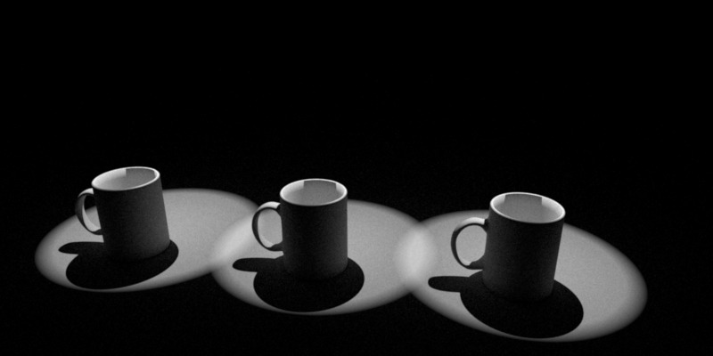

Alessia
1. Depth of field
** WILL DESCRIBE THE IMPLEMENTATION LATER, FOR NOW I AM JUST UPLOADING THE COMPARISON WITH MITSUBA **Focal Length = 8, radius = 0.2


Focal Length = 15, radius = 0.2


Focal Length = 15, radius = 0.5


2. Spotlight


3. Environmental Map Emitter


4. Lens Distortion


5. Image Textures
The first one is obtained scaling the perlin noise (texture 4) by 0.50, 0.50. The second one is obtained without scaling the perlin noise texture.

These are the four textures that I used:


6. Procedural Textures